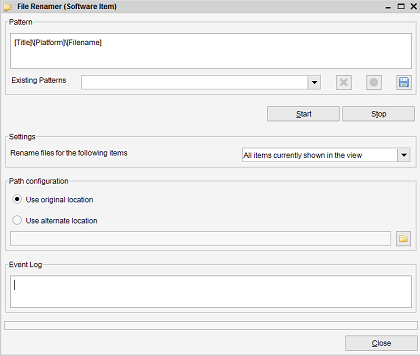
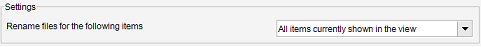
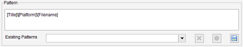
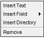

With this tool files can be renamed and/or moved, using the information entered in Data Crow.
Files are renamed by using a 'pattern'. A pattern is a small script made up out of tags which
are replaced by actual values when used & applied.

Settings
In the Settings you can indicate for which items the files will be renamed.

-
All items currently in the view
-
Only the selected items
Pattern
The pattern field is where the new path and name of the files is determined.

The Pattern field enables you to create a valid pattern by using the
right-click menu. The right-click menu offers 4 options, which are explained below.

Insert Text
Selecting this menu option will display a small dialog where a static text can be entered.
By default all characters which would make a filename invalid, such as the ':' character,
are disallowed. The text will be used 'as is' when this pattern is applied.
Insert Field
Select the field to insert. You'll notice the following text is inserted [<fieldname>].
This 'tag' will be replaced by the actual value for this field when the pattern is applied.
Insert Directory
Inserts a directory sign, indicating a new directory should be created. Everything prior to
the directory sign is now part of the directory structure instead of the filename.
Remove
Removes the selected pattern part.
Saving a Pattern
The 'Existing Patterns' list shows saved patterns. To add a pattern to this list simply press
the button.
Managing saved Patterns
The button removes the currently selected existing filter,
the button applies the currently selected existing filter.
Path Configuration
Use original location
This is the default option. Files will be renamed from within their current location.
If the pattern contains a directory structure, the file will be move relatively to its
current location.
Use alternate location
You can also choose to move the file to an altogether different location. This is a nice
option if you have for example mp3 files scattered over multiple hard drives and would like
to to move them all to a different location.
Renaming your files
After you have created a pattern press 'start' to start renaming your files.
Preview
For your convenience Data Crow will first show you a preview of what the result might look like.
The actual result might differ as the file to rename has to exist. If it does not exist it is
simply skipped.
Excluding items
The preview window also allows you to exclude items.
Select the items you want to remove by clicking on them in the table, right-click and select
'remove' from the popup menu. The removed items will be excluded by the file renamer task.
Verify and continue
Press 'start' to continue the renaming process if the preview is to your liking.
Press 'cancel' to stop the process.
Stopping
At any time you can press 'stop' to cancel the renaming process.
 button.
button.
 button removes the currently selected existing filter,
the
button removes the currently selected existing filter,
the  button applies the currently selected existing filter.
button applies the currently selected existing filter.